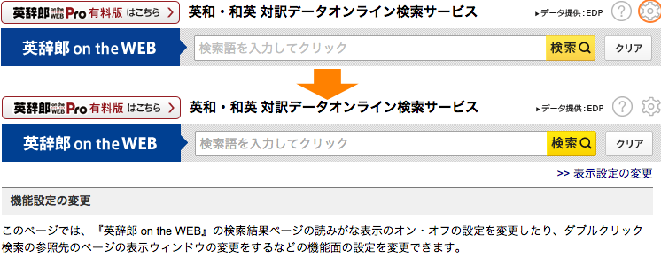
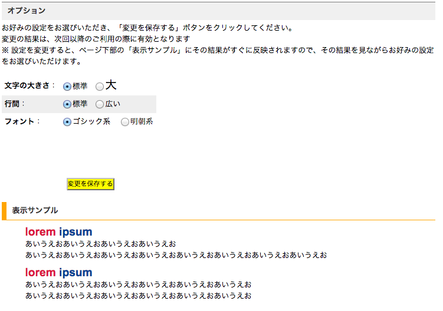
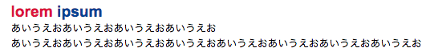
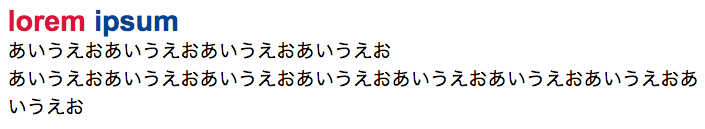

【Tip】検索結果の文字サイズを大きくする方法
■ 「英辞郎 on the WEB」の検索結果の文字を大きめに表示するには、いままではブラウザのオプションで調整するしか方法がありませんでした。いままでにも何度か「検索結果の文字をもっと大きく表示したい」というご意見を「英辞郎 on the WEB」をご利用の方々よりいただいてきました。そのご要望にお応えするべく、ご希望の設定に変更できる「表示設定の変更」のページをご用意いたしました。
■ 「表示設定の変更」のページへは、検索キーワード入力欄の右にある 「設定アイコン」をクリックし、表示された機能設定画面にある「表示設定の変更」と書かれたリンクをクリックするとアクセスできます（右図のオレンジの丸で囲まれている部分）。
「設定アイコン」をクリックし、表示された機能設定画面にある「表示設定の変更」と書かれたリンクをクリックするとアクセスできます（右図のオレンジの丸で囲まれている部分）。
■ 「表示設定の変更」ページの「文字の大きさ」オプション（右図の 1 番）で、お好みの大きさをお選びください。
お選びになられた設定で検索結果のページがどのように変化するのかをこのオプションの下に用意した「表示サンプル」のセクションですぐに確認できますので、適宜お好みの設定をお選びください。
お選びいただいた後に「変更を保存する」ボタンをクリックすると、次回の検索から、その設定で「英辞郎 on the WEB」をご利用いただけます。
また、文字を「大」に変更した場合には、行間が詰まりすぎて、読みにくくなったとお感じになられる場合もあるかもしれません。その場合には、「行間」オプション（右図の 2 番）で「広い」をお選びいただくとよいかもしれません。
以下、「標準」、「大」を選んだときの文字の大きさのイメージをご用意しましたので、ご参考になさってください（このサンプル画像は、Macintosh の Chrome でキャプチャしたものです。「行間」は「標準」のままです。お使いの OS やブラウザ、その設定により違いがあるかと思いますので、適宜お試しの上、ご調整ください）。
-
「標準」の場合

-
「大」の場合

■ また、このページでは、「文字の大きさ」と「行間」以外に、「フォント」オプション（上の図の 3 番）で「ゴシック系」と「明朝系」のフォント（書体）をお選びいただけますので、お好みの設定をお選びください。
※ Internet Explorer では、「明朝系」をお選びいただいた場合、英数字のテキストは「明朝系」のフォントとして表示されますが、日本語テキストは「ゴシック系」のままとなりますので、あらかじめご了承ください。
※※ ユーザ設定含め、「英辞郎 on the WEB」のご利用には JavaScript が必要となりますので、あらかじめご了承ください。